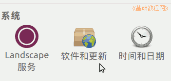
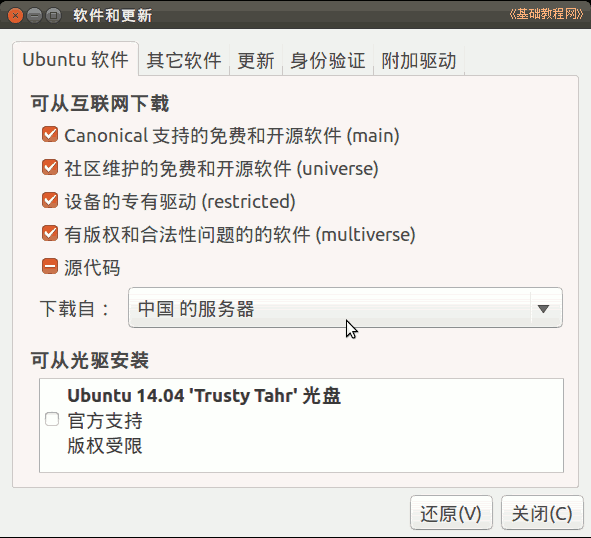
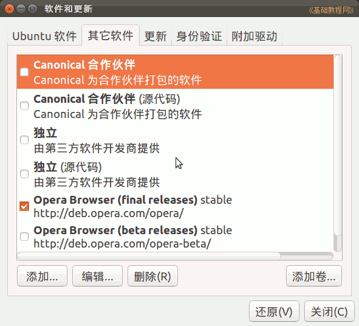
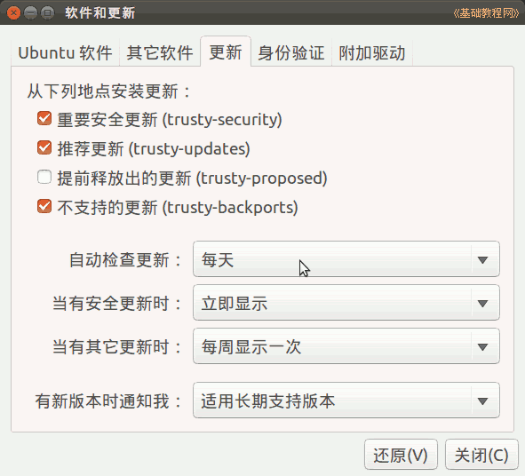
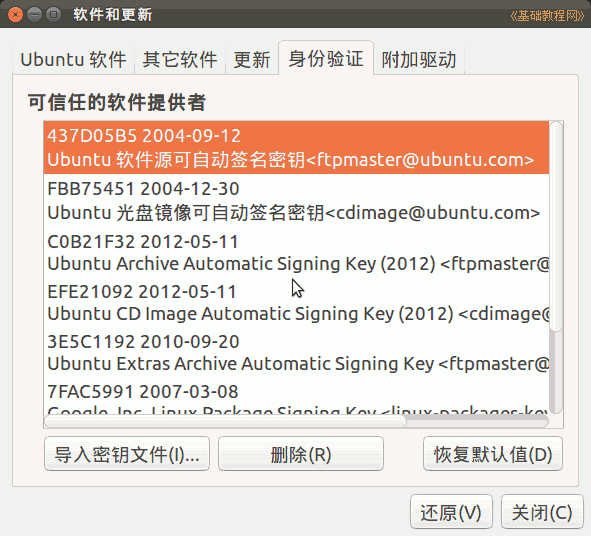
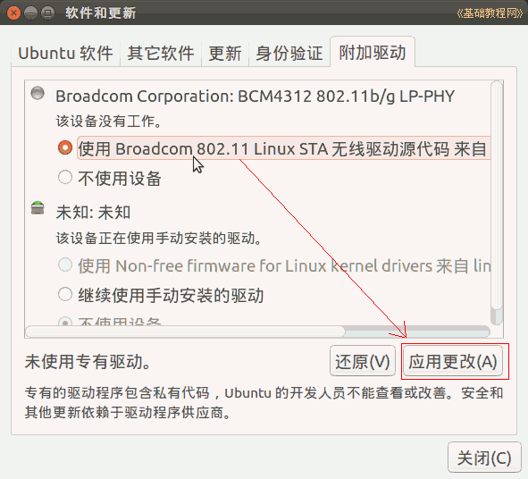

，打开程序，或者依次点“主按钮、所有程序、过滤结果、系统、系统设置、软件更新”；
，打开程序，或者依次点“主按钮、所有程序、过滤结果、系统、系统设置、软件更新”；Ubuntu 入门操作指南
作者：TeliuTe 来源：基础教程网
九十二、软件更新 返回目录 下一课在这里可以更改软件源，启用硬件的专有附加驱动；
1、软件更新
1）点击左侧齿轮按钮，或者点击主按钮，在搜索中输入 contr ，打开程序，或者依次点“主按钮、所有程序、过滤结果、系统、系统设置、软件更新”；

2）在出来的窗口里，第一个是软件更新面板，点击“下载自－其他站点”，可以选择国内的其他软件源，详细参考： http://teliute.org/linux/Ubsetup/lesson9/lesson9.html；

3）点击第二个标签“其他软件”，这里可以查看安装某些软件时，由软件提供的更新源，用不上的可以去掉勾，或者删除；

4）点击第三个标签“更新”，可以选择要更新的项目，一般提前释放的不要勾选，其他更新频率，新版本提醒默认即可；

5）下一个“身份验证”，是更新源服务器的gpg验证，添加额外源如ppa时，会添加该源的身份验证文件；

6）最后一个是“附加驱动”标签，点击后开始搜索系统中的需要专有驱动的硬件，找到后点“使用”，再点右下角的“应用更改”即可；

本节学习了的基础知识，如果你成功地完成了练习，请继续学习下一课内容；
本教程由86团学校TeliuTe制作|著作权所有
基础教程网：http://teliute.org/
美丽的校园……
转载和引用本站内容，请保留作者和本站链接。